19 ways to experience Queen Elizabeth National Park
Every experience below can be booked as a private or group tour. Tap "Book this" or message us on WhatsApp with the name of the activity.
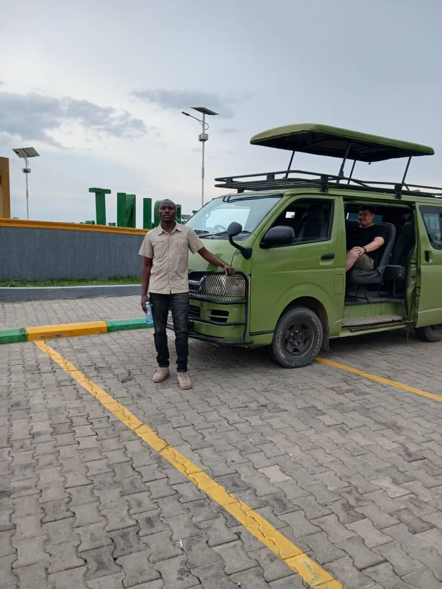
Game drive
Guided game drives in Queen Elizabeth National Park by vehicle, so you can view both big and small game such as lions, leopards, elephants, buffaloes and antelopes.
Book this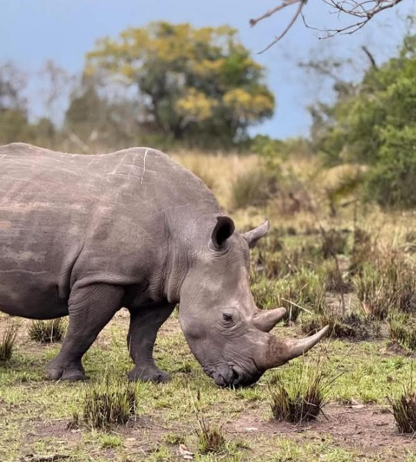
Salt mining experience
Visit the crater lakes where salt is still extracted locally during the dry season, for example at Katwe and Bunyampaka in the enclaves of Queen Elizabeth National Park.
Book this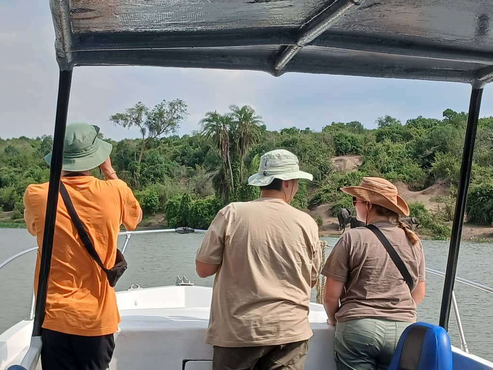
Boat cruise
A guided cruise on the Kazinga Channel in specialised fibre boats, with close views of aquatic animals such as hippos, crocodiles and monitor lizards, and elephants along the shore.
Book this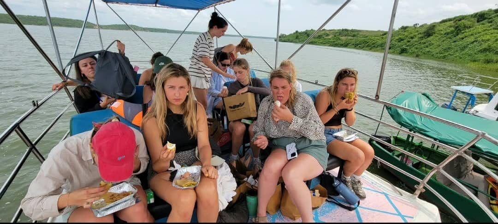
Cultural tourism
Observe and learn about local African cultural practices such as traditional dance, traditional healers, blacksmiths, storytellers and basket weaving.
Book this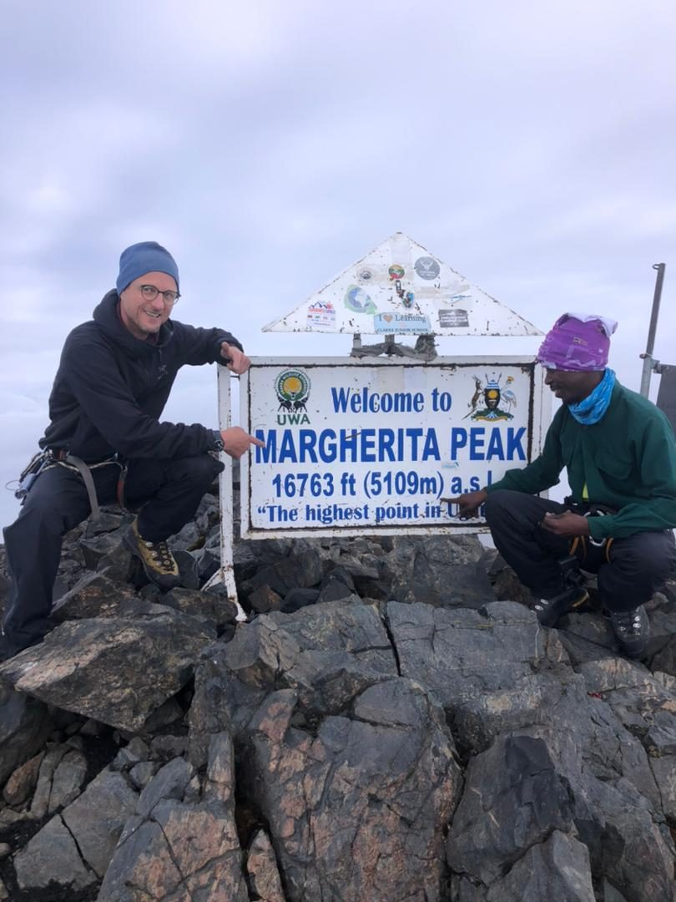
Rwenzori Mountains forest trekking
See the snow-capped Margherita Peak, Rwenzori duikers, the three-horned Johnston's chameleon, different vegetation zones and a variety of primates.
Book this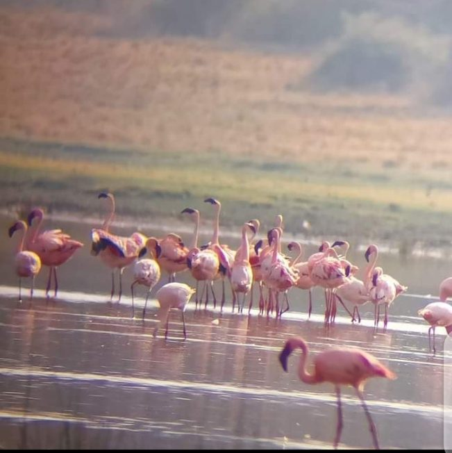
Bird watching
The park's woodlands, forests and savannah are home to many birds, including fish eagles, pelicans, flamingos, kingfishers, African jacanas, herons and yellow-billed storks.
Book this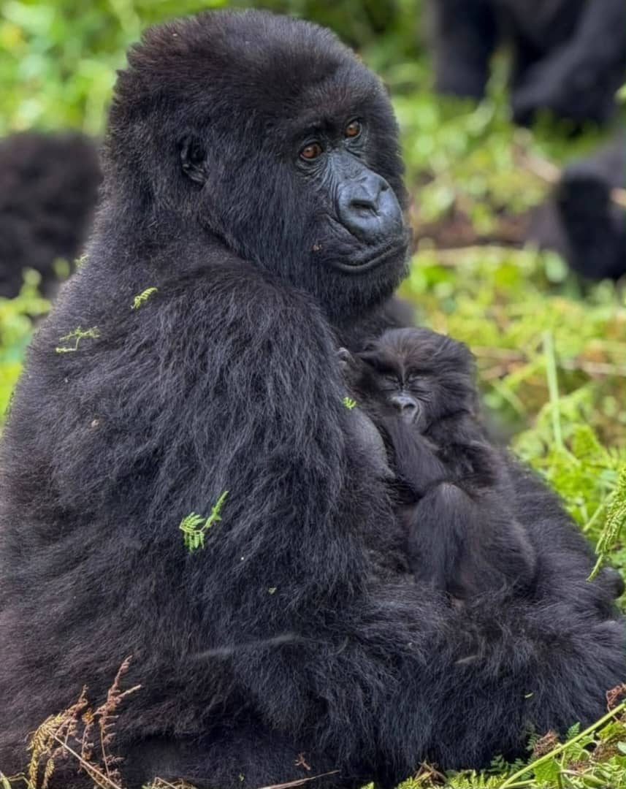
Gorilla tracking
Trek and see different gorilla families in Bwindi Impenetrable Forest National Park in western Uganda.
Book this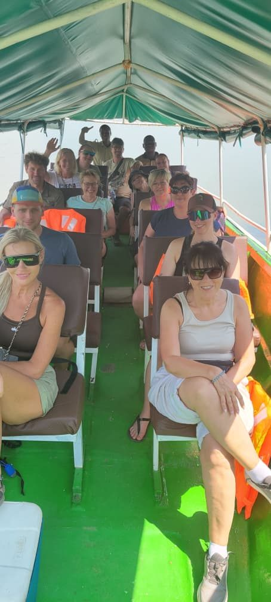
Chimpanzee tracking
We take you into forested protected areas to observe chimpanzees, including Kibale Forest National Park, Kyambura Gorge and Kalinzu Forest.
Book this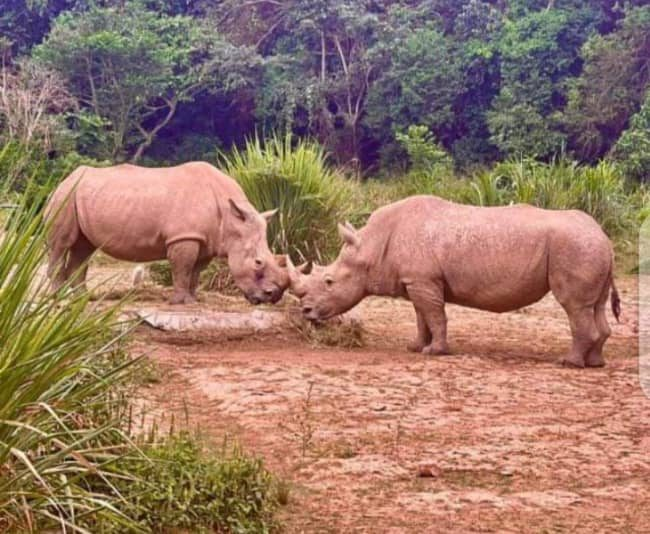
Rhino tracking
Protected areas such as Ajai, Kidepo, Ziwa Rhino Sanctuary and Entebbe Zoo give you a chance to track or view rhinos.
Book this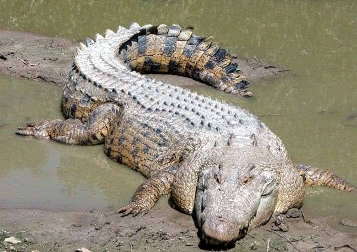
Spot fishing
Queen Elizabeth National Park is blessed with major lakes like George, Edward and the Kazinga Channel. Take part in spot fishing if you wish, and try catching tilapia, lungfish and catfish with rods and hooks.
Book this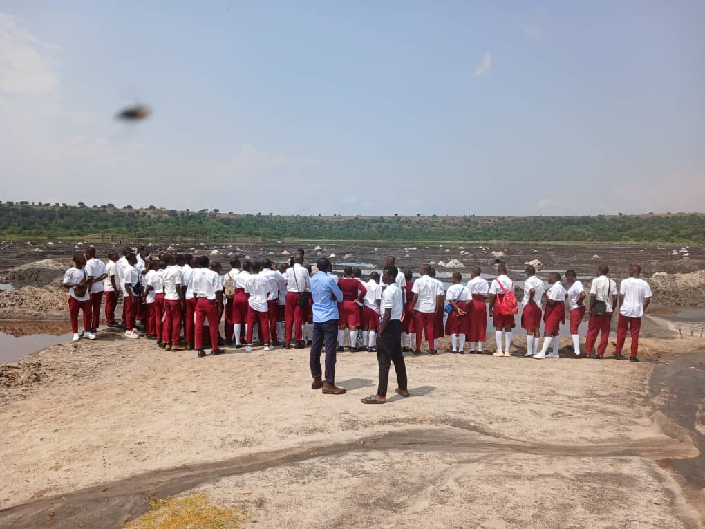
School study tours
Hands-on field practicals for learners and scholars covering fishing, wildlife conservation, salt mining, hot springs, weather instruments and more, all based in the park.
Book thisCraters drive experience
Another amazing drive takes you through crater lakes in Rubirizi and in the park, such as Katinda, Mirambi, Nyungu, Kyema and Kamweru.
Book thisEquator line monument
The equator crosses Uganda. It is marked at 0° and divides the earth into two equal parts. Experience it at Kikorongo along the Kasese–Mbarara highway in western Uganda.
Book this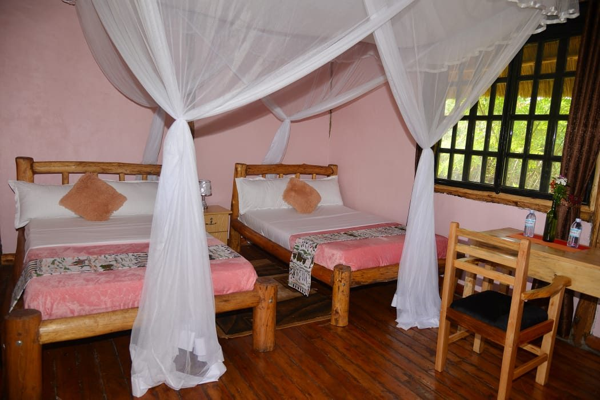
Accommodation and camping
Serene accommodation and camping grounds for resting and overnight stays. Depending on your choice, meals can be included in the accommodation package.
Book this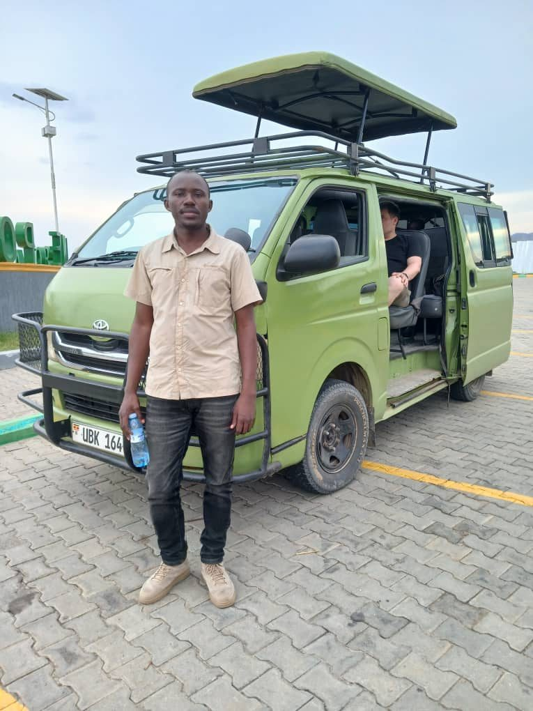
Transportation
Transport arranged on booking, with a choice of Land Cruiser, Super Custom and other vehicle types to take you to your lodge, hotel and tourism destinations in comfort.
Book this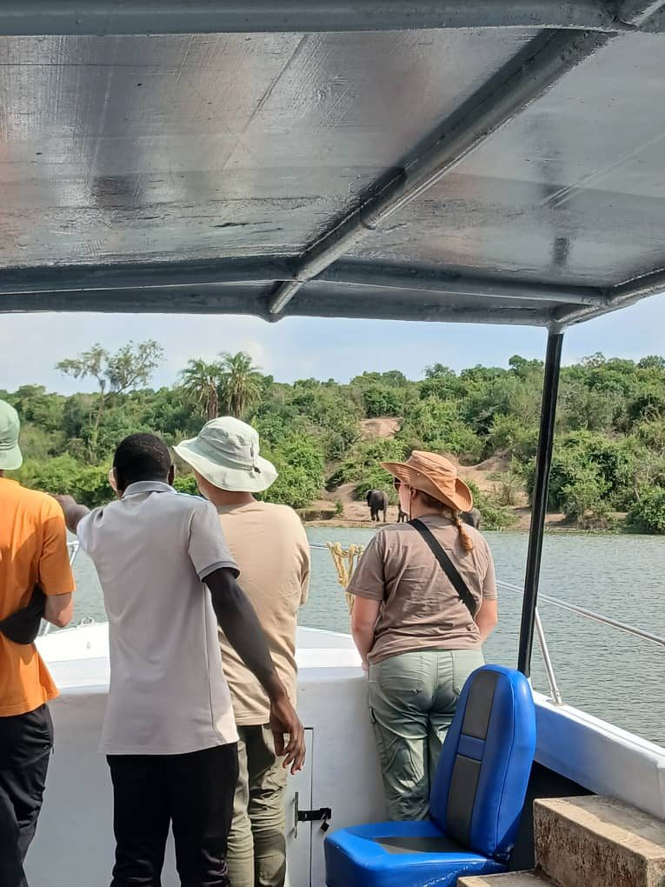
City tours
A guided tour in town to see how locals buy and sell goods in the markets, what happens in leisure grounds, nightclubs and more.
Book this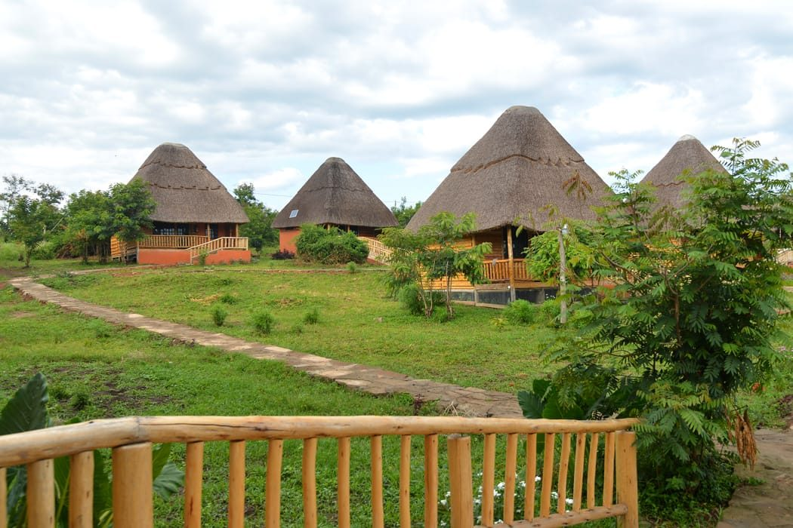
Hill hiking
Hike parts of the Rwenzori mountain ranges for physical fitness, with views of farms, the Rwenzori forest in the distance, and the open savannas and lakes of Queen Elizabeth National Park.
Book this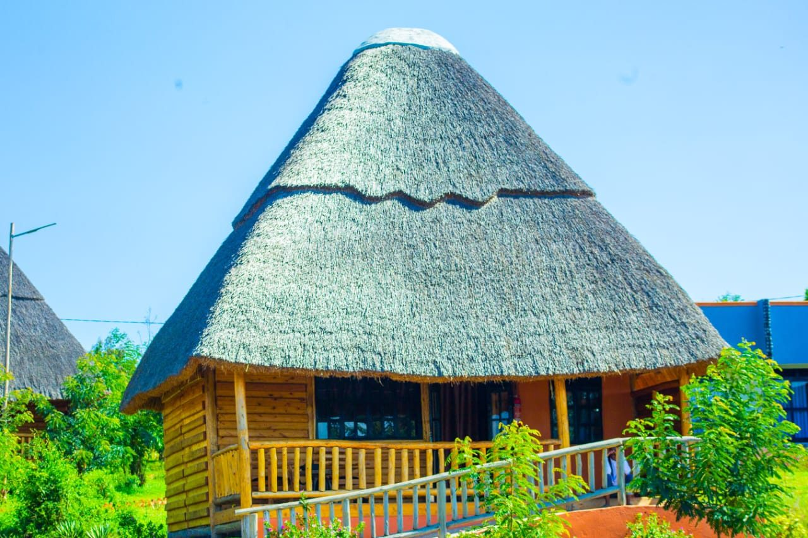
Agritourism
Uganda is blessed with farmland, so visitors can take part in crop harvesting, farm preparation, irrigation, and fruit and vegetable picking. You can also learn about food storage in granaries and fertiliser application, and harvest and cook food with community members.
Book this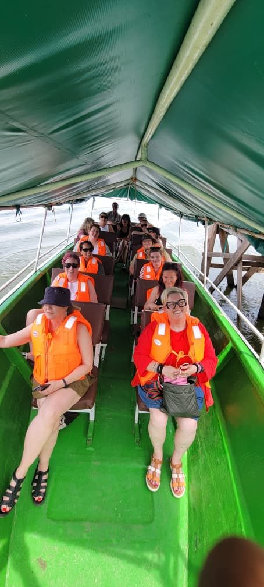
Cycling activity
Uganda is blessed with good roads, both murram and tarmac. Most guests arrange a cycling trip with us, and our local and sports bicycles make it easy.
Book thisTell us your dates and interests
We'll put together a private or group itinerary that mixes two or more of these experiences into one trip.